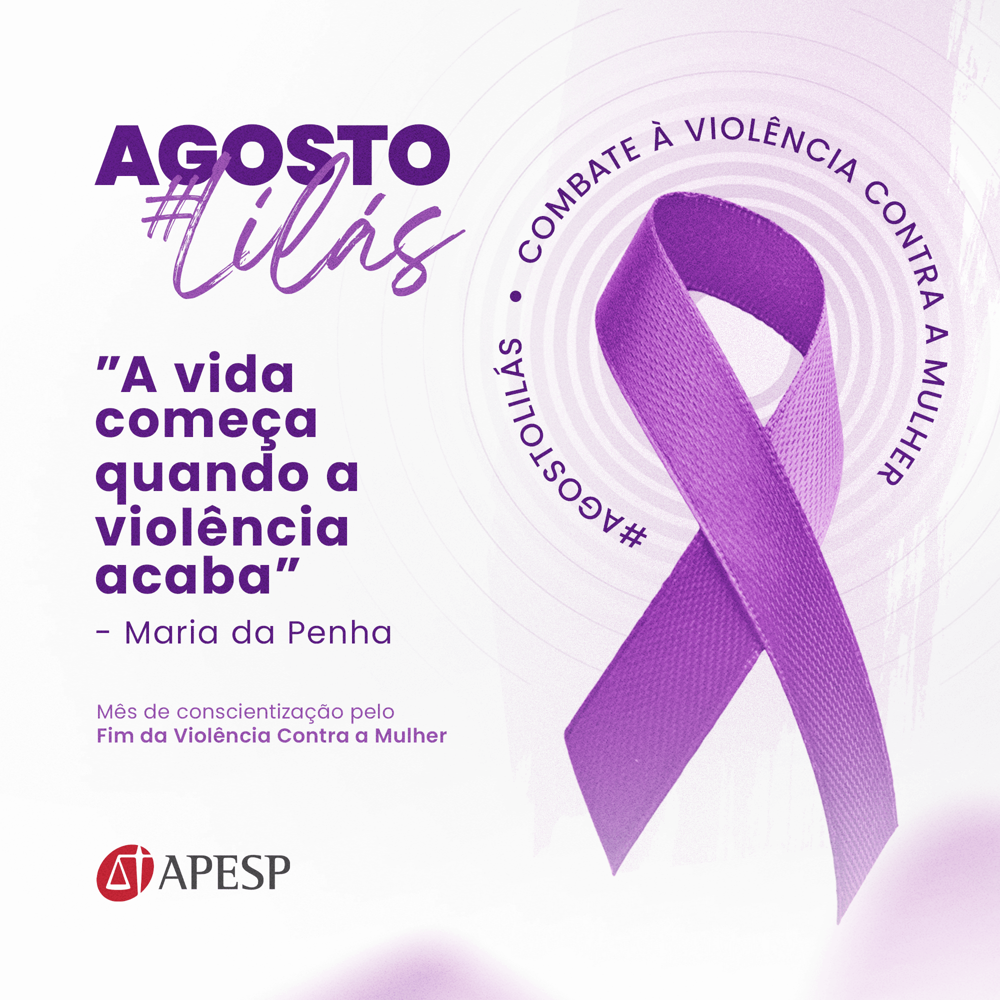
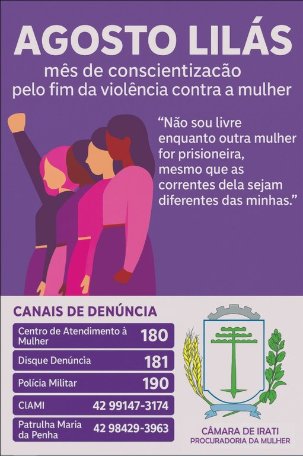

Agosto Lilás
O que é o Agosto Lilás?
O Agosto Lilás é uma campanha nacional de conscientização no Brasil dedicada ao enfrentamento, prevenção e fim da violência doméstica e familiar contra a mulher.
O mês foi escolhido em referência ao aniversário da sanção da Lei Maria da Penha, que ocorreu em 7 de agosto de 2006.
A Lei Maria da Penha (11.340/06) que celebra seus 20 anos em 2026, é um marco no Agosto Lilás. Protegendo as mulheres,contra as violências que acontecem no convívio doméstico, no âmbito familiar ou em relações íntimas de afeto.
Tipos de Violência!
Física
- Espancamento
- Lesões com objetos cortantes ou perfurantes,Ferimentos causados por queimaduras ou armas de fogo
- Tortura
- Ferimentos causados por queimaduras ou armas de fogo
Sexual
- Estupro
- Obrigar a mulher a fazer atos sexuais que causam desconforto ou repulsa
- Impedir o uso de métodos contraceptivos ou forçar a mulher a abortar
- Forçar matrimônio, gravidez ou prostituição por meio de coação, chantagem, suborno ou manipulação
- Limitar ou anular o exercício dos direitos sexuais e reprodutivos da mulher
Psicológica
- Ameaças
- Constrangimento
- Humilhação
- Manipulação
- Ridicularização
Patrimonial
- Controlar o dinheiro
- Destruição de documentos pessoais
- Furto, extorsão ou dano
- Causar danos propositais a objetos da mulher ou dos quais ela goste
Moral
- Acusar a mulher de traição
- Emitir juízos morais sobre a conduta
- Expor a vida íntima
- Rebaixar a mulher por meio de xingamentos que incidem sobre a sua índole
- Desvalorizar a vítima pelo seu modo de se vestir
Vicária
- Agressão física ou psicológica contra filhos, familiares ou pessoas próximas.
- Impedir ou dificultar o convívio da mãe com os filhos como forma de punição.
- Utilizar os filhos para transmitir ameaças, chantagens ou ofensas.
- Sequestrar, ocultar ou reter os filhos para causar sofrimento à mulher.
- Ameaçar ou praticar violência contra pessoas da rede de apoio da mulher (pais, irmãos, amigos ou familiares).
- Em sua forma mais extrema, assassinar filhos ou familiares com o objetivo de causar sofrimento permanente à mulher (vicaricídio)
Como denunciar?

